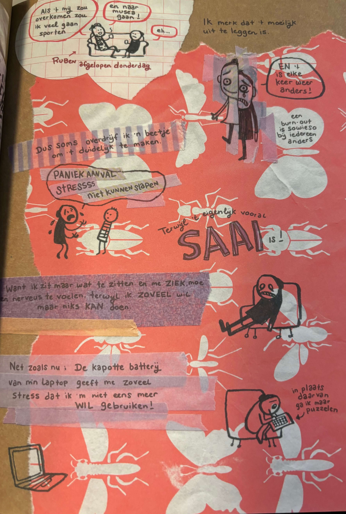

<html lang="en"></html>

</html>

<head>
    <meta charset="UTF-8">
    <meta name="viewport" content="width=device-width, initial-scale=1.0">
    <title>Portfolio Jamie Kramer</title>
    <link rel="stylesheet" href="../css/style.css">
    <link rel="preconnect" href="https://fonts.googleapis.com">
    <link rel="preconnect" href="https://fonts.gstatic.com" crossorigin>
    <link
        href="https://fonts.googleapis.com/css2?family=Pixelify+Sans:wght@400..700&family=Reddit+Sans+Condensed:wght@200..900&display=swap"
        rel="stylesheet">


    <style>
        * {
            font-family: "Reddit Sans Condensed", sans-serif;

            margin: 0;
            padding: 0;
            box-sizing: border-box;
        }

        p {
            font-size: 20px;
        }

        body {
            background-color: #232323;

        }

        section {
            padding-left: 300px;
        }

        nav,
        a {
            border: none;
            margin: 0;
            padding: none;
        }


        nav {
            background-color: #3F3F3F;
            height: 75px;
            display: flex;
            justify-content: space-between;
            width: 100%;
            align-items: center;

        }
    </style>
</head>

<body>
    <nav>
        <a href="../html/onderzoek.html" class="logoIcon">
            <p>TERUG NAAR ONDERZOEK</p>
        </a>
    </nav>

    <section>
        <div style="width: 100%; height: 100%; position: relative; background: #232323">
            <div style="width: 805px; height: 110px; left: 28px; top: 29px; position: absolute; color: white; font-size: 36px; font-family: Avenir Next Condensed; font-weight: 700; word-wrap: break-word">ONDERZOEK - DESK RESEARCH - BURN-OUT DAGBOEK </div>
            <div style="width: 543px; height: 98px; left: 28px; top: 75px; position: absolute; color: white; font-size: 16px; font-family: Avenir Next Condensed; font-weight: 400; word-wrap: break-word">Ik heb het boek ‘Burn-out dagboek’ van Maaike Hartjes gebruikt als bron om dieper in te gaan op hoe een persoon die een burn-out heeft zich voelt. Nu is Maaike geen student, maar ik kan wel veel elementen gebruiken aangezien veel burn-out klachten overeenkomen ook al heeft Maaike niet de juiste leeftijdscategorie. </div>
            <div style="width: 499px; height: 211px; left: 37px; top: 701px; position: absolute; color: white; font-size: 16px; font-family: Avenir Next Condensed; font-weight: 400; line-height: 20px; word-wrap: break-word">Een interessant aspect waar ik nog niet echt over had nagedacht was het effect van de burn-out op je directe omgeving. In deze illustratie laat Maaike zien hoe een klein ding haar heel erg kan laten uitbarsten in woede, woede naar een persoon die het alleen maar goed probeert te doen. Burn-out kan ervoor zorgen dat je om de kleinste dingen van slag kan raken. Dit kan best vervelend over komen op je naasten, zeker als zij niet begrijpen waarom je zo reageert of waar je door heen gaat. Dit kwam ook uit mijn enquête: er heerste nogal veel onbegrip en irritatie op momenten dat zij niet wisten dat de persoon in hun omgeving een burn-out had en zo reageerde. </div>
            <div style="width: 430px; height: 134px; left: 680px; top: 316px; position: absolute; color: white; font-size: 16px; font-family: Avenir Next Condensed; font-weight: 400; word-wrap: break-word">Maaike illustreert hier goed hoe het is om midden in die burn-out te zitten. Ik denk dat het belangrijk is om te laten zien dat niemand vrijwillig zich zo voelt, en dat het ook geen pretje is om een burn-out te hebben. Ik vind het ook mooi hoe Maaike laat zien dat je zelf bewuster raakt van dat je een probleem hebt, en dat dat probleem nog niet is opgelost en dat je niet altijd op dat moment een oplossing er voor hebt. Het is een heel proces.  </div>
            <div style="width: 454px; height: 153px; left: 680px; top: 698px; position: absolute"><span style="color: white; font-size: 16px; font-family: Avenir Next Condensed; font-weight: 400; word-wrap: break-word">Maaike laat zien in haar boek dat ze over het algemeen hele fijne en positieve reacties krijgt op haar burn-out, maar toch zijn er een aantal minder fijne interacties geweest zoals hierboven op de plaatjes te zien. Deze reacties van mensen lijken te komen uit toch een stukje onbegrip of dat iemand denkt het beste met iemand voort te hebben zonder dat dit misschien klopt. Dat laatste heeft met </span><span style="color: white; font-size: 16px; font-family: Avenir Next Condensed; font-weight: 700; word-wrap: break-word">aannames</span><span style="color: white; font-size: 16px; font-family: Avenir Next Condensed; font-weight: 400; word-wrap: break-word"> te maken, wat een interessant uitgangspunt zou kunnen zijn om mee verder te gaan.</span></div>
            
            <div style="width: 202px; height: 21px; left: 28px; top: 186px; position: absolute; color: white; font-size: 16px; font-family: Avenir Next Condensed; font-weight: 700; word-wrap: break-word">Typische burn-out gevoelens</div>
            <div style="width: 202px; height: 21px; left: 37px; top: 534px; position: absolute; color: white; font-size: 16px; font-family: Avenir Next Condensed; font-weight: 700; word-wrap: break-word">Invloed op omgeving</div>
            <div style="width: 298px; height: 30px; left: 682px; top: 93px; position: absolute; color: white; font-size: 16px; font-family: Avenir Next Condensed; font-weight: 700; word-wrap: break-word">Waar je doorheen gaat tijdens een burn-out</div>
            <div style="width: 202px; height: 21px; left: 680px; top: 489px; position: absolute; color: white; font-size: 16px; font-family: Avenir Next Condensed; font-weight: 700; word-wrap: break-word">Reacties</div>
            
            <div style="width: 335px; height: 34px; left: 792px; top: 32px; position: absolute"><span style="color: white; font-size: 14px; font-family: Avenir Next Condensed; font-weight: 275; word-wrap: break-word">Bron: Hartjes, M. (2021).</span><span style="color: white; font-size: 14px; font-family: Avenir Next Condensed; font-style: italic; font-weight: 275; word-wrap: break-word"> Burn-out dagboek </span><span style="color: white; font-size: 14px; font-family: Avenir Next Condensed; font-weight: 275; word-wrap: break-word">(2e herziene druk). Amsterdam: Nijgh & Van Ditmar</span></div>
            
            
            
            
            
            
            
            
            
            
        </div>

        <div style="width: 100%; height: 100%; color: white; font-size: 36px; font-family: Avenir Next Condensed; font-weight: 700; word-wrap: break-word">ONDERZOEK - DESK RESEARCH - DOCUMENTAIRE BRANDSTOF </div>

        <div style="width: 100%; height: 100%; color: white; font-size: 36px; font-family: Avenir Next Condensed; font-weight: 700; word-wrap: break-word">ONDERZOEK - DESK RESEARCH - TNO </div>

        <div style="width: 100%; height: 100%; color: white; font-size: 36px; font-family: Avenir Next Condensed; font-weight: 700; word-wrap: break-word">ONDERZOEK - DESK RESEARCH - CNBC </div>

    </section>

</body>

</html>